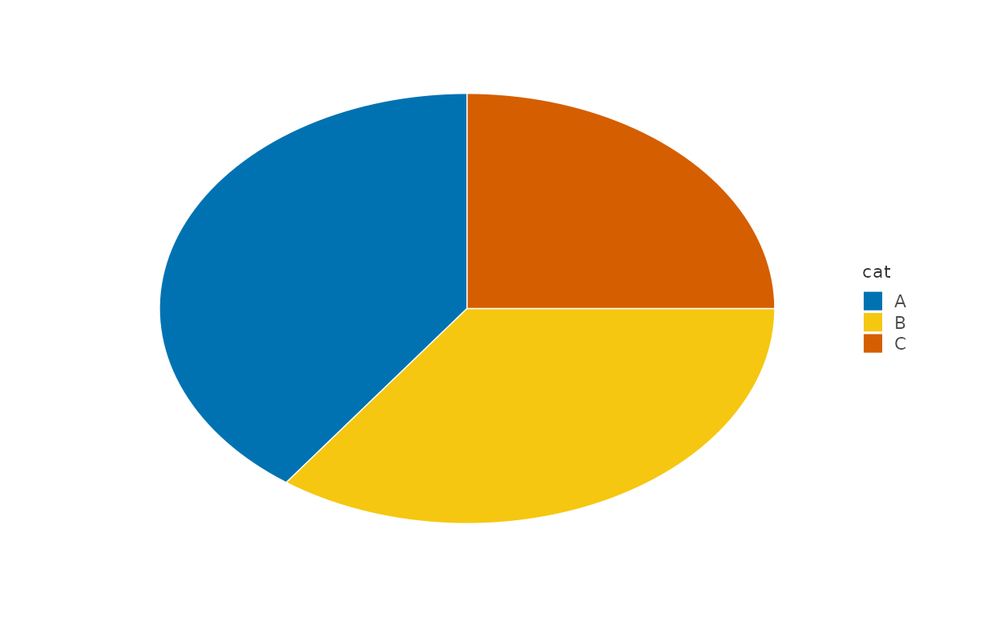
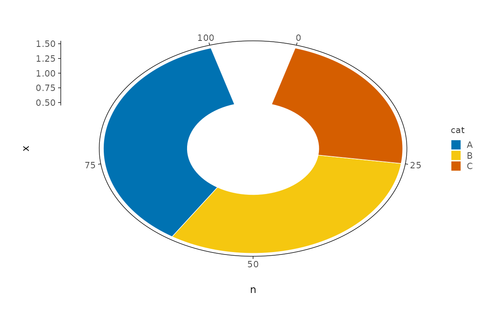
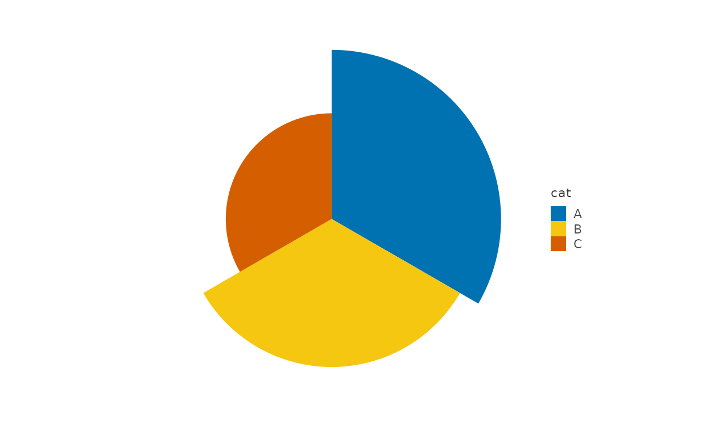
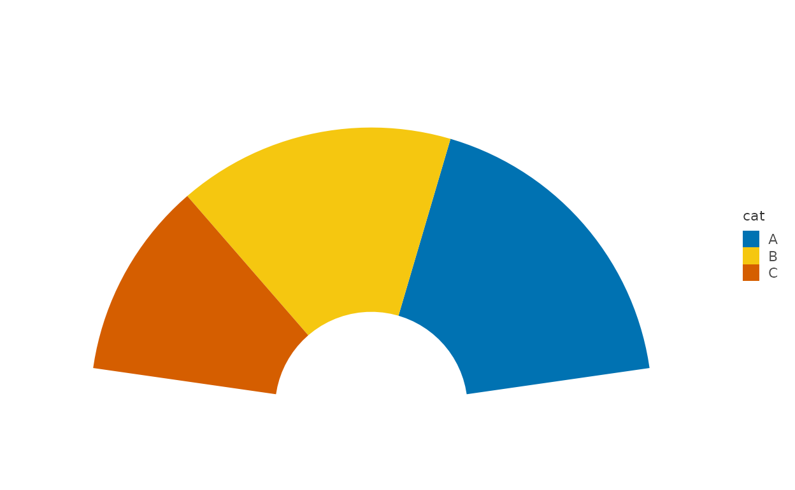
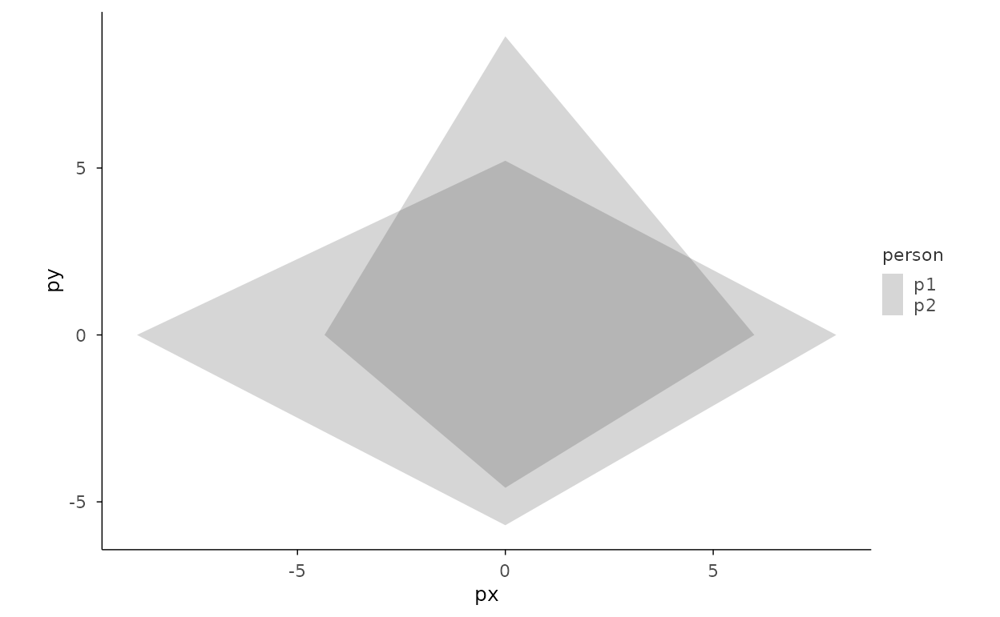

本页解决什么问题：Part-to-whole views: stacked bars and polar proportions. 前置：已完成 gallery-matrix
下一步：→ gallery-geo
All proportion charts are recipes:
mark_bar + project_polar. No dedicated
pie/rose/donut marks exist (composition-first principle).
Pie and donut
d <- data.frame(cat = c("A", "B", "C"), n = c(40, 35, 25))
# Pie: single constant x + stack + polar(theta = "y")
d |>
plotit(encode(x = 1, y = n, fill = cat)) |>
mark_bar(position = "stack", width = 1) |>
project_polar(theta = "y")
# Donut: add inner_radius
d |>
plotit(encode(x = 1, y = n, fill = cat)) |>
mark_bar(position = "stack", width = 1) |>
project_polar(theta = "y", inner_radius = 0.4)
Rose / Nightingale
d |>
plotit(encode(x = cat, y = n, fill = cat)) |>
mark_bar(width = 1) |>
project_polar()
Semicircle gauge (stage 5: start/end)
d |>
plotit(encode(x = 1, y = n, fill = cat)) |>
mark_bar(position = "stack", width = 1) |>
project_polar(theta = "y", start = -pi / 2, end = pi / 2, inner_radius = 0.3)
Radar (recipe)
Precomputed polar coordinates + mark_polygon in
Cartesian space (see AGENTS.md 3.2b).
set.seed(7)
lv <- 4
rd <- data.frame(
variable = rep(letters[1:lv], 2),
person = rep(c("p1", "p2"), each = lv),
value = runif(lv * 2, 4, 9)
)
rd$theta <- (as.numeric(factor(rd$variable)) - 1) / lv * 2 * pi
rd$px <- rd$value * sin(rd$theta)
rd$py <- rd$value * cos(rd$theta)
rd |>
plotit(encode(x = px, y = py, group = person, colour = person), dodge = 0) |>
mark_polygon(alpha = 0.2) |>
project_cartesian(fixed = 1)